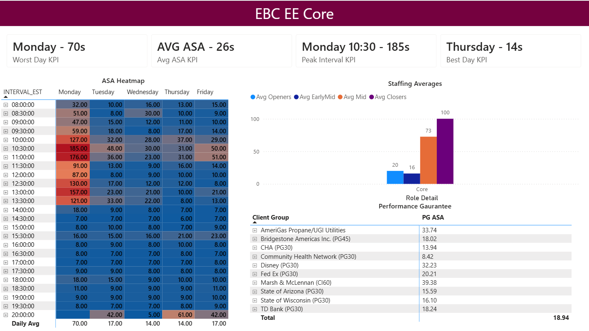

Executive KPI cards
Highlights average ASA, the best-performing day, the worst-performing day, and the peak interval so users can recognize the reporting period’s main story immediately.
A multi-page operational reporting solution that turns interval-level contact center data into clear performance, staffing, and client-level insights for Workforce Management decision-making.
The LOB Analysis Dashboard was created to make line-of-business performance easier to evaluate across days, 30-minute intervals, staffing roles, performance guarantees, and client groups. The design prioritizes fast exception identification while preserving the detail needed for deeper analysis.

Highlights average ASA, the best-performing day, the worst-performing day, and the peak interval so users can recognize the reporting period’s main story immediately.
Uses conditional formatting to compare weekday and interval performance. Higher ASA values stand out visually, making service-pressure periods easier to isolate.
Summarizes average openers, early/mid staff, mid staff, and closers to place performance results beside the staffing pattern supporting the operation.
Breaks out performance-guarantee ASA by client group, helping users move from an aggregate result to the accounts influencing overall performance.
Translated WFM reporting questions into specific KPIs, drill paths, staffing categories, and line-of-business views.
Connected operational and workforce sources, standardized fields, validated intervals, and established reliable model relationships.
Created DAX for weighted ASA, daily performance, peak intervals, best and worst days, and staffing averages.
Compared KPI outputs with heatmap values, tested filter behavior, corrected aggregation logic, and improved the visual hierarchy.
The project combines business-intelligence development, workforce data knowledge, and iterative validation.
Result: A scalable workforce analytics experience that helps analysts and leaders identify when performance changed, where the issue occurred, and which staffing or client segments require additional investigation.